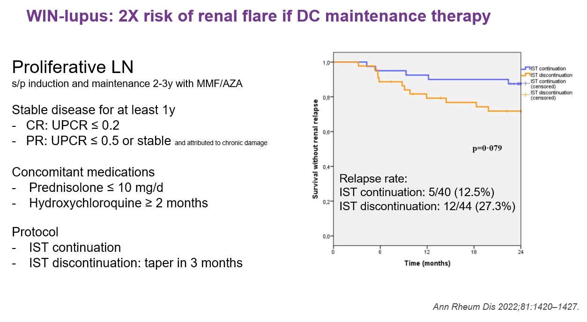

Lupus Nephritis (LN) 治療總整理
來源：以 2025 ACR LN Guideline、2025 EULAR LN Guideline (kidney involvement update) 為主，輔以 Kelly's Textbook of Rheumatology Ch.82 補充機轉/藥理細節（標註「Kelly補充」處）
病理特徵請見另一篇筆記 SLE_Lupus_Nephritis_病理特徵.md；一般（非腎臟）SLE治療請見 SLE_治療.md；臨床表現總覽請見 SLE_Clinical_Manifestation.md — Kidney Involvement
兩指引詳細比較見文末「附錄：ACR vs EULAR 差異速查」
治療原則
兩份最新指引（2025）皆已廢除傳統 induction/maintenance 二分法，改採「持續性 LN 治療（continuous therapy）」概念：從診斷起即開始合併治療（GC + 2種免疫抑制劑），並依反應調整，而非分成「先誘導、再維持」兩個明確階段。
- ACR：正式定義 TRIPLE therapy（GC + 2種免疫抑制劑）與 DUAL therapy（GC + 1種）
- EULAR：Overarching Principles 強調——(A) 規律監測腎侵犯徵象、專家介入、適時切片；(B) LN治療應與一般SLE治療原則一致（含HCQ使用）；(C) LN有慢性腎臟病(CKD)進展風險，需風濕科-腎臟科跨科合作；(D) 治療目標為預防CKD進展與flare、處理共病症，免疫抑制治療與非免疫（腎保護）治療同等重要
多專科合作（風濕科+腎臟科）、shared decision-making、健康不平等因素，兩指引皆列為共同原則。
EULAR 2025 建議總覽：

ACR 2024/2025 治療總覽（含Class III/IV與純V對照、難治型處理流程）：

治療反應目標定義
| 定義 | ACR | EULAR |
|---|---|---|
| 治療反應時間目標 | 未分階段，統一於6–12個月評估 | 分階段：3個月內蛋白尿↓≥25%、6個月↓≥50%、12個月UPCR<700mg/g（之後越低越好） |
| Complete Renal Response (CRR) | 蛋白尿<0.5 g/g（或<50mg/mmol）且腎功能穩定/改善（±20% baseline，即≥80% baseline），6–12個月內（可能>12個月） | 任一時間點UPCR<500mg/g；GFR於3個月內穩定至≥80% baseline |
| Partial Renal Response (PRR) | 蛋白尿↓≥50%且<3 g/g，且腎功能穩定，6–12個月內 | 未另立正式PRR定義 |
| Inadequate response / Nonresponse | 6–12個月未達PRR | 未特別正式定義，統稱 persistently active disease |
| Refractory disease | 兩種標準6個月療程皆失敗後仍持續活動 | 未特別正式定義 |
（Kelly補充：舊版描述complete renal response需1.5–2年才達成，proteinuria<0.5g/day，GFR ±10%——與新版定義相近但門檻與時間點已更新，以上表guideline版本為準）
腎切片 (Kidney Biopsy)
適應症（兩指引高度一致）：
- 持續蛋白尿 ≥0.5 g/24h 或 UPCR ≥500 mg/g
- Glomerular hematuria（尿沉渣acanthocytes ≥5%或RBC casts）
- 不明原因腎功能下降
EULAR特別註明：0.5g/day門檻雖有爭議（部分病人低於此值仍有proliferative LN），但仍保留作為指標性門檻，不排除更低蛋白尿時因臨床判斷而切片。
切片閱片標準：應由腎病理專科醫師依 ISN/RPS (International Society of Nephrology/Renal Pathology Society) classification 判讀，包含NIH activity/chronicity indices、tubulointerstitial lesions（interstitial inflammation、interstitial fibrosis with tubular atrophy）、以及是否合併TMA。
出血風險：約1–2%（需輸血或栓塞處置），特定族群（血小板低下、腎功能不良、APS）可達3%。
複查切片適應症（兩指引一致）：
- 疑似腎臟flare（蛋白尿/血尿增加、腎功能惡化）
- 適當治療≥6個月後蛋白尿/血尿/腎功能仍持續惡化或無改善
- 考慮停用免疫抑制治療前（EULAR特別強調：臨床緩解與組織學緩解常不一致，複查切片可協助停藥決策；40–50%複查切片會發現組織學分類改變）
若無法切片：依臨床表現分流——nephritic features（血尿、高血壓、腎功能受損）依Class III/IV治療；nephrotic features（蛋白尿≥3.5g/g、低白蛋白血症）依Class V治療（ACR）。
LN 嚴重度分類（Kelly補充，供病理-臨床對照參考）
增生性腎炎 (Proliferative Nephritis)
輕度：Class III無crescents/fibrinoid necrosis，chronicity index ≤3，腎功能正常，非腎病症候群範圍蛋白尿
中重度：輕度但初始治療部分/無反應或延遲緩解(>12個月)；或focal proliferative伴不良組織學特徵；或Class IV無不良組織學特徵
重度：中重度但6–12個月未緩解；或增生性疾病伴腎功能受損+fibrinoid necrosis/crescents>25%腎絲球；或混合V+增生性；或高chronicity(>4)或高chronicity+高activity；或急速進行性腎絲球腎炎（RPGN，2–3個月內Cr倍增）
膜性腎病變 (Membranous Nephropathy)：輕度（非腎病症候群範圍蛋白尿，腎功能正常）／中度（腎病症候群範圍蛋白尿，腎功能正常）／重度（腎病症候群範圍蛋白尿，腎功能已受損）
註：此為Kelly分類，供理解病情嚴重度之用；現行guideline治療演算法主要依LN class（III/IV vs 純V）+ 蛋白尿量/腎功能/肺腎外活性等風險因子決定治療，不完全對應上述嚴重度分級。
Class I / II LN 治療
- 建議RAAS blockade（ACEi/ARB）
- GC：適用於蛋白尿>1g/day、活動性尿沉渣、podocytopathy組織學表現、或有肺腎外疾病活性者
- 可考慮免疫抑制劑（AZA）降低累積GC劑量
Class II LN（ACR）：多為mesangial型，免疫複合物侷限於mesangium；未達正式建議共識，但RAAS-I為常規使用；追蹤蛋白尿增加時應考慮複查切片，評估是否class switch或轉為lupus podocytopathy。
活動性 Class III/IV（±V）LN 治療
EULAR 治療演算法（不特別分class，統一適用於active LN；含Initial/Subsequent用藥選項與治療目標）：

ACR 治療演算法（Class III/IV±V專用，依風險因子分三路徑：肺腎外表現/eGFR≤45、無特殊風險因子、蛋白尿>3g/d）：

Glucocorticoid 方案
| ACR | EULAR | |
|---|---|---|
| IV MP pulse | 250–1000mg/day×1–3天 | 累積500–2500mg，1–3天內給予 |
| 起始口服劑量 | ≤0.5mg/kg/day（上限40mg/day） | 0.3–0.7mg/kg/day，最長4週；兒童0.6–1.0mg/kg/day |
| 減量目標 | ≤5mg/day，6個月內 | ≤5mg/day，4–6個月內 |
| 停用 | 未明訂時間點 | sustained CRR者應逐步完全停用，目標12–24個月內 |
初始合併治療方案
兩指引皆建議合併治療（combination therapy） 為多數病人的優先選擇，單一藥物（MPAA或低劑量CYC monotherapy）僅列為替代選項（適合初發、輕度、低蛋白尿、腎功能保存良好者）：
- a) MPAA + belimumab（或ACR: MPAA或低劑量CYC + belimumab；EULAR同）
- b) MPAA + CNI（voclosporin或tacrolimus）
- c) MPAA + obinutuzumab（僅EULAR正式列入；ACR指引定稿時REGENCY試驗剛發表，僅於Discussion提及，未正式列入建議表；REGENCY trial完整數據整理見 SLE_Obinutuzumab_REGENCY_ALLEGORY.md）
- ELNT低劑量CYC + belimumab（CYC療程完成後轉MPAA維持）
三個關鍵合併治療試驗（BLISS-LN、AURORA-1、REGENCY）之收案條件、endpoint定義、次族群表現差異整理見 SLE_Lupus_Nephritis_三大試驗比較.md
依風險因子選擇方案（ACR有明確分級建議；EULAR列為Table 2「預後因子」供參考，未強制分流）：
- 蛋白尿≥3g/g：優先 MPAA+CNI，優於belimumab方案（CNI起效較快、belimumab在高蛋白尿族群療效較弱）
- 中重度肺腎外表現：優先belimumab方案，優於CNI方案（belimumab對mucocutaneous、musculoskeletal表現額外有效）
- eGFR≤45、血壓>165/105、切片高chronicity：優先belimumab方案，避免CNI相關腎毒性/高血壓風險（ACR）
- CNI類藥物（尤其voclosporin以外的CsA/TAC）應避免或謹慎用於eGFR<30–45 mL/min/m²或切片有明顯fibrosis者（EULAR）
MMF目標劑量：2–3g/day（或等效eMPA）
急速進行性腎絲球腎炎 (RPGN)
EULAR獨立列為建議5（一般演算法未涵蓋此類病人，因大型RCT多排除低GFR病人）：可用短療程（6–7次/月）高劑量IV CYC（0.5–0.75 g/m²/月），必要時併用monthly IV MP pulse。停經前女性接受高劑量CYC應併用GnRH agonist保護卵巢。
（ACR未獨立列出此類建議，僅於CYC選擇段落文字提及crescents/fibrinoid necrosis合併腎功能惡化時「可能傾向選擇CYC-based regimen」）
CYC劑量選擇
兩指引皆偏好 ELNT（Euro-Lupus）低劑量方案（500mg IV × 6次，每2週一次）優於傳統高劑量monthly方案與口服CYC（ACR：對口服CYC為Strong recommendation）。
（Kelly補充：完整NIH pulse CYC給藥/監測protocol，含mesna保護膀胱、水分補充、止吐藥物等操作細節，請見 SLE_治療.md 之CYC藥物段落）
維持治療與停藥
| ACR | EULAR | |
|---|---|---|
| 反應後總療程 | 3–5年（達CRR後總療程） | 至少3年（達反應後起算），獨立建議7：sustained CRR滿3年後可考慮逐步停藥（需評估flare風險） |
| 停藥前置作業 | 未強制要求複查切片 | 建議可用複查切片協助決策；許多專家實務上傾向治療滿5年才停藥 |
| 誘導期用MMF、達CRR後 | 繼續同一方案（含MMF/belimumab/CNI組合），優於換藥 | 同左，繼續mycophenolate單獨或合併belimumab/CNI/obinutuzumab |
| 誘導期用CYC、達CRR後 | 轉為MMF優於AZA（計畫懷孕者選AZA） | 轉為MPAA或AZA皆可（未明確排序，計畫懷孕者選AZA） |
| PRR（部分反應）處理 | 個別化調整，依反應軌跡決定；可考慮複查切片釐清是活動性或已固定的damage | （同概念，見「反應不佳」段落） |
Flare相關風險因子（EULAR Table 2）：不遵從服藥、治療時間過短(<3年)、初始治療反應不完全、持續肺腎外/血清學活性、未使用HCQ、年輕(<30歲)/男性、複查切片仍有殘餘組織學活性(NIH AI≥2)。
實證佐證
WIN-Lupus trial（停用維持治療的flare風險）：Proliferative LN於induction+maintenance治療2–3年（MMF/AZA）後達穩定疾病≥1年（CR: UPCR≤0.2；PR: UPCR≤0.5或穩定且歸因於慢性損傷；併用prednisolone≤10mg/d、HCQ≥2個月），比較繼續IST (immunosuppressive therapy) vs 停藥（3個月內漸減停用）。24個月時腎臟relapse rate：IST continuation 5/40 (12.5%) vs discontinuation 12/44 (27.3%)，停藥組風險約為繼續組的2倍（p=0.079，未達統計顯著但趨勢一致），提示停藥決策需審慎評估flare風險。

Sustained remission持續時間與長期腎功能保護：長期世代追蹤顯示，達成sustained clinical remission (sCR)並持續≥3年者，其IKF (impaired kidney function)-free survival明顯優於sCR僅0–2年者；sCR滿3年與4年以上兩組存活曲線相近且平坦，為指引「反應後總療程3–5年」「sustained CRR滿3年後可考慮停藥」建議提供長期實證基礎。

WIN-Lupus：Jourde-Chiche N, et al. Ann Rheum Dis. 2022;81:1420-1427.
Remission duration study：Ann Rheum Dis. 2025;84:594-600.
純 Class V LN 治療
ACR 治療演算法（依蛋白尿≥1g/d分流）：

ACR（明確依蛋白尿量分層，維持獨立演算法）：
- 蛋白尿≥1g/g：triple therapy——GC + MPAA+CNI（優於MPAA+belimumab或CYC+belimumab；因CNI起效較快、belimumab在post-hoc分析中對純V療效證據較弱）
- 蛋白尿<1g/g：GC及/或免疫抑制劑（MPAA、AZA、CNI）優於不治療
EULAR：刻意不再依LN class分開演算法（與2019版最大差異之一），純Class V病人併入建議4整體框架處理；但註明REGENCY（obinutuzumab）試驗未納入純V病人、其餘RCT中純V病人比例通常僅約15%（研究power不足以偵測class V專屬療效），故純V病人的方案選擇證據強度較低，需個案判斷。Post-hoc分析顯示voclosporin、obinutuzumab在高基礎蛋白尿病人效果較佳。
難治性 / 反應不佳 LN
第一步（兩指引皆強調）：先確認藥物劑量是否足夠、病人是否遵從服藥（可測drug level如MPAA/CNI trough），而非直接判定為難治。
升階治療（ACR，依nonresponse/refractory分層明確）：
- Dual therapy無效 → 升為Triple therapy
- Triple therapy無效 → 換另一組合Triple，或於MPAA/CYC基礎上加anti-CD20藥物
- 真正refractory（兩種標準6個月療程皆失敗）→ 更積極方案：加anti-CD20、三種非GC免疫抑制劑合併（MPAA+belimumab+CNI）、或轉介試驗性治療（investigational therapy）
EULAR：於建議4方案間切換 + 轉介專家中心；anti-CD20選項含rituximab（2019沿用）與obinutuzumab（新增）；並提及CAR-T細胞治療於多重難治型SLE腎侵犯的新興角色，值得未來探索（ACR LN指引未提及CAR-T）。
Meta分析顯示：真正難治型LN約50–80%病人於使用rituximab後轉為部分或完全反應。
血栓性微血管病變 (TMA)
EULAR獨立建議11（LoE 4/C，ACR無正式建議，僅Discussion文字提及）：
TMA在SLE/LN中涵蓋多種病因，需鑑別後給予對應治療：
| 病因 | 鑑別依據 | 治療 |
|---|---|---|
| TTP (thrombotic thrombocytopenic purpura) | ADAMTS13活性低下 | 血漿置換 (PLEX)，之後續LN免疫抑制治療；反應不佳可考慮 caplacizumab（抗von Willebrand factor，目前SLE族群資料僅限少數case report） |
| CM-HUS (complement-mediated hemolytic uremic syndrome) | 排除TTP後、補體路徑活化證據 | Complement inhibitor（eculizumab、ravulizumab），對合併明顯腎損傷的CM-HUS族群似乎特別有效 |
| APS腎病變 (APS nephropathy) | aPL陽性（尤其高力價） | 抗凝治療 |
共同處置：GC（含IV MP pulse）視情況加入；診斷時應同時進行LN免疫抑制治療的評估。
（Kelly補充：APS腎病變的臨床表現為高血壓、subnephrotic蛋白尿、血尿、腎功能受損；曾發現mTOR pathway異常活化，可能為未來治療標的）
Lupus Podocytopathy
多表現為腎病症候群範圍蛋白尿；electron microscopy顯示瀰漫性podocyte foot process effacement，無subepithelial/subendothelial deposits。治療以GC及其他免疫抑制劑為主，建議與腎臟科共同管理。
腎臟保護治療 (Nephroprotective / Non-immune Therapy)
EULAR特別將此正名為「non-immune therapy」而非舊版「adjunct therapy」，強調其與免疫抑制治療同等重要。
| 項目 | ACR | EULAR |
|---|---|---|
| RAAS-I | 建議所有LN病人使用（若可耐受） | 建議：持續蛋白尿或高血壓者使用 |
| 血壓目標 | 收縮壓 <120（若可耐受） | <130/80 mmHg |
| SGLT2i | Table 4：穩定LN合併DM/CKD/中重度蛋白尿/心衰竭者考慮；高劑量免疫抑制下需留意UTI風險 | eGFR 20–60（<20禁忌）或其他CKD進展風險因子；建議延遲6–12個月、待疾病經免疫抑制穩定後才開始 |
| 飲食 | 限鈉≤2g/day；eGFR<60者限蛋白質<1g/kg/day | 限鹽、避免腎毒性藥物（如NSAID）、維持正常體重 |
| 抗凝 | 低白蛋白血症（<2–2.5g/dL）合併嚴重蛋白尿時，與腎臟科討論全劑量抗凝 | 相同建議 |
| Statin | 依CVD風險評估決定 | 依CVD風險評估決定 |
| 骨骼保護 | 依ACR GC-induced osteoporosis guideline | 依個別骨折風險；GFR降低者bisphosphonate需謹慎使用 |
| 感染 | 篩檢HBV/HCV/TB；依ACR疫苗指引接種；PJP及HBV高風險者考慮預防性投藥 | 同樣建議篩檢HBV/HCV/TB，接種不活化疫苗（流感、肺炎鏈球菌、SARS-CoV-2、帶狀疱疹） |
監測 (Monitoring)
未達CRR者：每3個月量化蛋白尿（ACR: Strong recommendation）
Sustained remission者：每3–6個月量化蛋白尿（ACR: Strong recommendation）
補體與anti-dsDNA：每次門診皆應測，但不需超過每月一次（ACR GPS）——這兩者對LN活性敏感度/特異度中等，但可預警新發LN或flare；數值變化應觸發臨床/檢驗評估，但不需在無臨床表現時搶先治療（除非個人經驗顯示該病人數值變化確實可預測flare）
無腎病史SLE病人的LN篩檢：每6–12個月驗尿蛋白，或有肺腎外flare時加驗（ACR: Strong recommendation，最新發病/近期活動性SLE建議每6個月，病程久且穩定者每年即可）
懷孕生育（LN特有考量）
（EULAR建議12，較完整涵蓋此議題；一般SLE懷孕原則見 SLE_治療.md）
- 活動性LN（尤其伴腎功能受損）為懷孕相對禁忌，應postpone至疾病穩定至少6個月
- 理想受孕條件：腎功能正常、血壓正常、UPCR<500mg/g（但實務上未必能達成，仍需依CKD分期做風險分層）
- 孕期相容藥物：GC、AZA、CNI（含tacrolimus），加上HCQ，孕期及哺乳期皆可持續使用（voclosporin孕期安全性證據尚不足）
- RAAS-I應停用（第一孕期即有致畸胎性），血壓控制改用其他藥物
- 因LN病史增加子癲前症風險，建議使用低劑量aspirin
- MPAA、CYC於第一孕期禁忌；僅在第二、三孕期危及生命之疾病狀況下考慮使用
- B細胞清除劑（rituximab等）應避免於第三孕期使用（新生兒低丙種球蛋白血症、疫苗反應受影響風險）
- 建議多專科團隊（含熟悉高風險妊娠的產科醫師）共同追蹤
慢性腎臟病與末期腎病 (CKD/ESKD)
流行病學（Kelly補充）
- Meta分析顯示LN相關ESKD風險在1970s–1990s間下降（15年風險從>30%降至22%），之後plateau，近年反而上升
- Class IV LN進展至ESKD風險最高
- 美國資料：LN-ESKD全因死亡率20年間下降（100 patient-years死亡率從1995–99年11.1降至2010–14年6.7）
- ESKD臨床預測因子：baseline GFR降低、高血壓、糖尿病、持續孤立性C3低下、未達腎臟緩解；組織學上fibrinoid necrosis、fibrous crescents、interstitial fibrosis with tubular atrophy也與風險增加相關
透析
- SLE透析病人5年存活率約80–90%，與非SLE透析病人相當；近年ERA registry資料顯示LN病人接受腎臟替代治療後10年存活率已與其他病因ESKD病人相近
- 血液透析 vs 腹膜透析：meta分析顯示兩者於flare、感染、死亡率無差異，但血液透析心血管事件風險較高（RR 1.44）；個別病人偏好應納入選擇考量
- 急速腎功能惡化病人：IV MP + IV CYC（0.4–0.5g/m²）可於透析前8–10小時給藥（讓藥物可被移除），透析期間可持續
腎臟移植
| ACR | EULAR | |
|---|---|---|
| ESKD時的建議 | 強烈建議移植優於單純透析 | 所有腎臟替代治療方式皆可用，含活體捐贈與preemptive移植 |
| Preemptive移植 | 條件式建議（eGFR接近15 mL/min/1.73m²時考慮） | 與較佳10年腎存活率相關，但目前僅少數病人有此機會 |
| 移植前肺腎外疾病靜止要求 | 不要求特定月數，僅需無其他主要器官侵犯即可移植（不需完全臨床/血清學緩解） | 明確要求肺腎外疾病clinically inactive滿6個月（此為兩指引明顯分歧點） |
| 移植後免疫抑制 | 無正式建議specific regimen | 同左；CNI常用於誘導期預防急性排斥，維持期建議減量 |
| 移植腎LN復發 | 約10%，多為輕度mesangial病灶 | 相同數字 |
附錄：ACR vs EULAR 真正立場分歧（非僅單方未提及）
| 分歧點 | ACR | EULAR |
|---|---|---|
| Class III/IV vs 純V是否分開演算法 | 分開 | 刻意合併，不分class |
| 依風險因子(蛋白尿/肺腎外活性)選方案 | 獨立、強制的分級建議 | 僅供參考(Table 2)，保留醫師裁量 |
| Obinutuzumab於初始治療地位 | 未正式納入 | 正式納入建議4選項之一 |
| 血壓控制目標 | 收縮壓<120 | <130/80 |
| GC減量至5mg目標時程 | 6個月 | 4–6個月 |
| 移植前肺腎外疾病靜止期要求 | 不要求特定月數 | 明確要求≥6個月 |
| RPGN是否獨立列出治療建議 | 否（僅段落文字提及） | 是（獨立建議5） |
| TMA是否有正式建議 | 否（共識不足，未成正式建議） | 是（獨立建議11，含caplacizumab等具體藥物） |